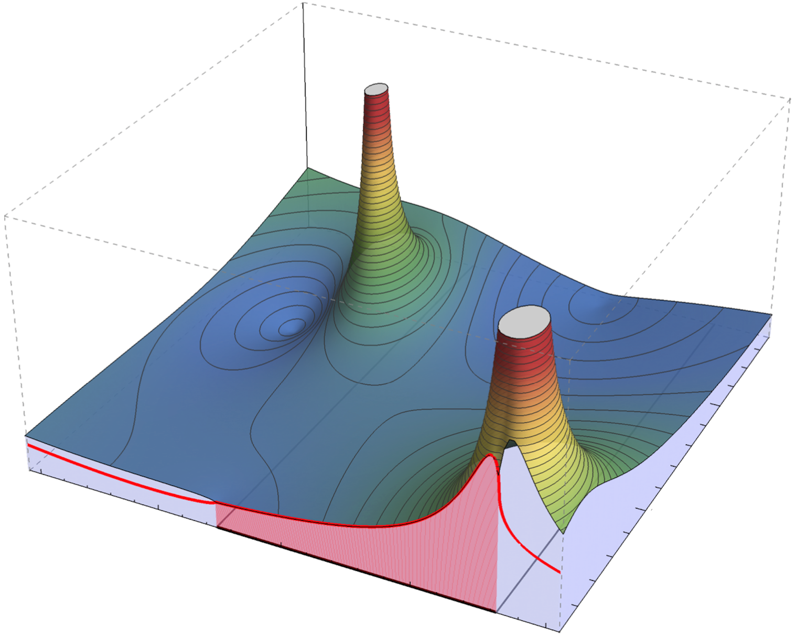

Strong interaction is one of the four fundamental interactions of nature. Strongly interacting particles are called hadrons such as
protons, neutrons, pions, etc.. Similarly to the excitations of atoms (see visible spectrum of hydrogen below)
hadrons do not exist only in the ground state but can be excited in scattering or production experiments.
Model of the Hydrogen atom and its absorption/emission spectrum
The excited hadrons decay very quickly into energetically lower states. But the pattern of their
existence and appearance is universal and probably our best clue in understanding of the
strong interaction and the origin of matter. The summary of humanity's current state of
knowledge is collected by the Particle Data Group.
Quantum effects but also relativity are crucial for the understanding of hadrons.
The way to reconcile both is the so-called Quantum Field Theory, which for the strong
interaction is called Quantum Chromodynamics (QCD).
This theory has several unusual properties rooted in its non-trivial mathematical structure.
For example, protons are build up of three quarks, but have a mass hundred times larger than the sum of quark masses. Thus, the largest part of our mass and that of all visible Universe -- is due to QCD. Unraveling the pattern of excited hadrons is the golden thread through my research, connecting methods from S-matrix theory, effective field theories, numerical techniques of Lattice QCD, statistics, etc..
Resonances
Excited hadrons manifest themselves in various ways observable in, e.g., scattering or photoproduction experiments as an excess in cross-section rate. However, this depends on various factors and on the type of experiment. Universal properties of resonances (excited hadrons) can be extracted from the scattering amplitude extrapolated to complex energies.
In a nutshell, given an analytic form of the scattering amplitude fixed by the experimental data at real energies, one extrapolates it to the complex energy plane. The latter so-called Riemann surface is in general a non-trivial manifold consisting of multiple (2N, for N production thresholds) Riemann sheets, each spanning over the whole complex energy plane. The first Riemann sheet is a pole-free surface, while the others can have poles. These poles are associated with the resonances (see Figure below), whose mass and width are exactly fixed by the complex-energy pole position. These both characteristics of an excited state are independent of the exact production setup.

Resonance poles on the second Riemann sheet in the complex energy-plane (E). Red line shows the
part of the amplitude T, which is constrained by the experimental data.
[REF]
One interesting state is the Lambda 1405 resonance
with quantum numbers I=0, S=-1. It is important not only for testing
of our understanding of low-energy QCD, but also in explaining
novel states of matter searched for in J-PARC, GSI and DAFNE
experimental facilities. It may, furthermore, be one of vehicles for
explanation of the stiffness of the equation of state of neutron stars,
thus, being of interest for applications in Astrophysics. For more details
see a dedicated review:
I am working on extraction of universal parameters of resonances using experimental scattering, photoproduction, electroproduction or lattice QCD results. Some of those states are N*(1535), N*(1650) (lowest S-wave excitations of nucleon), ρ(770), σ(500) (lightest unstable hadrons), a1(1260) (axial meson resonance decaying in πππ), Λ(1405) and Σ(1385). In that, I have developed with my collaborators many tools to access two and three-body dynamics of hadrons:
Hadron spectroscopy from QCD is currently only accessible
within the Lattice Gauge Theory. There, in large-scale
numerical calculations, hadrons and interactions thereof
can be studied in scenarios which may even be inaccessible
by the experiments. Thus, Lattice QCD is more than a complementing
tool to experiments but truly a theoretical approach to QCD.
Finite volume effects -- Quantization
Lattice computations are necessarily performed on discretized
Eucledean space time in a finite box. Both these technical
limitations need to be lifted when comparing the results of
Lattice QCD with phenomenological observations. The discretization
effects are well under control, dealt with continuum extrapolations.
Mathematically more intricate and interesting effects arise from
the finiteness of the lattice setup -- the so-called finite-volume effects. At the core, the issue is that a finite
coordinate space induces the need for boundary conditions, which
induces the discretization of the momentum-space and the spectrum
of the QCD Hamiltonian -- see figure below.
Two-particle scattering amplitude T in a finite and infinite volume. In a finite volume: It is a real-valued and singular function of interaction energy (E: X-axis in units of particle mass M). Position of the poles corresponds to the energy eigenvalues to be measured in a corresponding lattice setup. In the infinte volume: It is holomorphic complex-valued
function of energy.
Pull the blue bar to switch between both "worlds".
The so-called quantization condition aims to bridge these
two worlds -- finite and infinite volume results. While the
general form of such a condition is not known, there is a large
interest in understanding three hadrons in the finite volume.
This will open the door to tackle several puzzles of modern
hadron physics. Recent international workshop dedicated to
this area of research has been held at the Bethe-Center in
for Theoretical Physics in Bonn (Germany) -
"
Multihadron Dynamics in a Box".
In recent years, I have worked on the derivation of three-body
quantization condition, the corresponding infinite-volume
amplitude, and applications to physical three-body systems
calculated on the lattice: